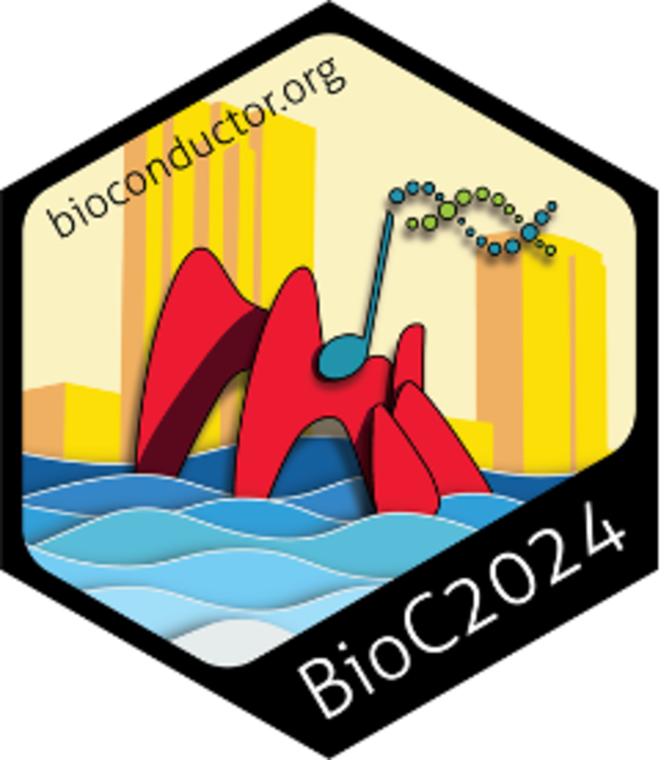
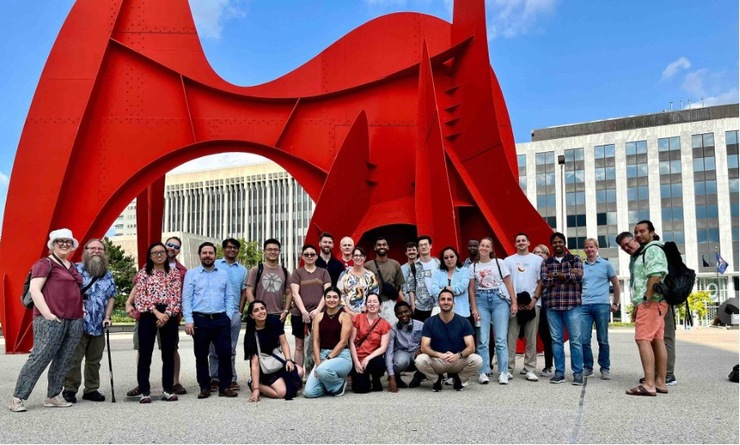
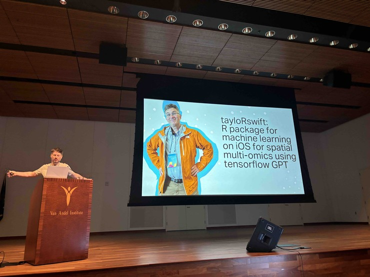
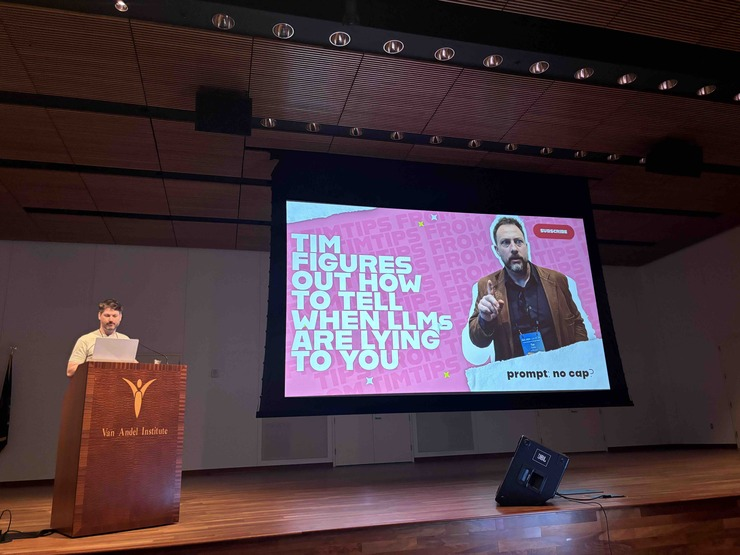
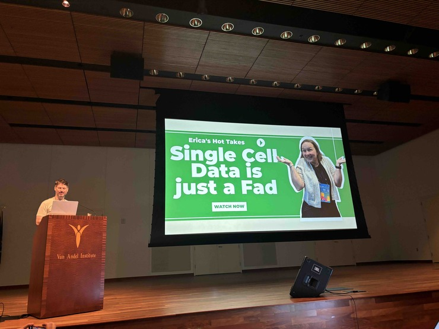

{kind=link}
{kind=link}
BioC2024 brought the Bioconductor community together at the Van Andel Institute in Grand Rapids, Michigan, where we celebrated our shared work and explored the latest advancements in bioinformatics. Over 350 participants took part, with 116 attending in person and 240 joining virtually, allowing participants from regions as far away as Latin America, Africa, and Asia to be part of the event. This year’s conference also marked our first time in the Mid-West US, highlighting the expanding reach and diversity of our community.
{kind=link}
Pre-Conference Activities
Before the main conference kicked off, BioC2024 offered a 2-day Carpentries workshop on RNA-seq, attended by 14 participants. The workshop was led by Jenny Drnevich, along with Tim Triche and Charlotte Hutchings, who are both instructors from our Bioconductor Carpentries training program. This hands-on workshop provided in-depth training in RNA-seq data analysis, equipping attendees with valuable skills. The workshop laid a strong foundation for those who continued into the main conference, helping to prepare them for the in-depth discussions and learning that followed.
{kind=link}
{kind=link}
{kind=link}
Bioconductor Carpentries instructors: Jenny, Tim & Charlotte
Conference Program
The BioC2024 conference offered a rich and diverse program, featuring a range of presentations, workshops, and discussions that showcased the latest advancements in bioinformatics and computational biology. You can explore the full schedule here. One attendee appreciated the balance, noting, they liked the “Relevant topics, fantastic app support, sufficient breaks for coffee/restrooms and quick chats, ability to convert between in-person and virtual.” Another participant highlighted the accessibility of the content, sharing “I found this conference really accessible even though it was outside my area of expertise. It gave me a good idea of what tools exist, what tools don’t exist, and what some of the underlying assumptions are.”
A View from the Technical Core
During his opening remarks, Vince Carey, lead of the Bioconductor project, shared a glimpse into the technical core of the project with this hand-drawn diagram. It illustrates the complex infrastructure and the interconnected tools and platforms that support the Bioconductor ecosystem.
{kind=link}
Keynotes
Our keynote speakers provided deep insights into their respective fields, setting the tone for an intellectually stimulating event:
Sündüz Keleş from the University of Wisconsin-Madison presented “Challenges and Opportunities in the Statistical Analysis of Single Cell High Throughput Chromatin Conformation Capture Data.” She explored the complexities of single-cell chromatin conformation analysis, prompting thoughtful discussions on data interpretation and its challenges.
Joshua Welch from the University of Michigan introduced his work on “Bayesian Inference of RNA Velocity from Single-Cell Multi-Omic Data,” offering new perspectives on single-cell multi-omic data that sparked fresh insights into the dynamics of RNA velocity.
Stephen Piccolo from Brigham Young University discussed “Using Artificial Intelligence to Support Dataset Finding, Image Accessibility, and Bioinformatics Education,” highlighting how AI is transforming dataset discovery and bioinformatics education, bridging the gap between cutting-edge technology and broader accessibility.
Sandra Safo from the University of Minnesota presented “Supervised Multiview Learning: The Case for One-Size-Fits-All and Bespoke Machine Learning Methods,” discussing the balance between standardized methods and bespoke approaches in multiview learning, and highlighting the adaptability required in today’s research.
Luca Pinello from Massachusetts General Hospital and Harvard Medical School delivered a keynote titled “Computational Approaches in Functional Genomics: Understanding Gene Regulation and Development.” He provided a detailed examination of computational approaches in functional genomics, offering new insights into gene regulation and development.
Workshops
The first day had 4 long (90 minute) hands-on workshops, 2 aimed at Bioconductor users and 2 at developers. The user-focused workshops took participants through advanced topics such as applying tidy principles to chromatin composition and exploratory spatial data analysis from single molecules to multiple samples. The developer-focused workshops focused on an Introduction to package development and Interoperability between R and Python.
Package demos
The conference also featured a series of package demos (short workshops of 45 mins), where attendees were introduced to tools for analyzing spatial omics data, exploring public gene expression datasets, and identifying tandem duplication events from short reads, among others. These demos provided practical insights into the latest software developments in the field.
Short Talks
In addition, the conference hosted numerous short talks that covered a wide array of themes, including spatial transcriptomics, single-cell data analysis, differential expression strategies, and multi-omic analysis methods. The talks highlighted cutting-edge research and innovative approaches to data analysis.
Birds of a Feather sessions
There were two Birds of a Feather (BoF) sessions that focused on collaborative topics like updates from the Cloud Methods working group and live-fire reproducible research, fostering open discussions and idea sharing among participants.
Meet the Core Team, TAB and CAB
There was also a session to introduce the Bioconductor core team and boards to the community, where they gave an overview of who they are, what they do, and shared the annual call for new members to join the TAB and CAB and participate in Bioconductor decision-making. See details on the call here.
Conference Infrastructure and Tools
Ensuring a smooth and accessible experience for all attendees, both in-person and virtual, was a top priority for BioC2024. Here’s how we made that happen:
RingCentral Platform
The BioC2024 conference utilized the RingCentral platform to stream talks and sessions to virtual attendees. This setup allowed participants from around the globe to access the live content in real-time, regardless of their location. Recordings of each day’s sessions were made available from 9 PM, giving attendees the flexibility to catch up on any talks they missed. These recordings will remain accessible for a month after the conference, after which they will be added to the Bioconductor YouTube channel for long-term access. However, we also received some feedback about minor issues with the platform. A few attendees noted that the video resolution could be improved, with occasional blurriness affecting the clarity of slides and content. We’re taking this feedback on board as we plan for future events, ensuring we continue to enhance the virtual experience for all participants.
Workshop Infrastructure
One of the key components of BioC2024 was the hands-on workshops. To ensure these sessions ran smoothly, we leveraged the Bioconductor Galaxy cloud platform, skillfully set up by Alex Mahmoud from the Bioconductor Core Team. This platform allowed participants to interactively run workshops from anywhere, making it easier for both in-person and virtual attendees to follow along.
Alex also created a quick 2-minute video tutorial on how to use the platform, making sure everyone could jump in without a hitch. If you missed the live workshops, don’t worry—they’ll be available under the “Archived” section at workshop.bioconductor.org, alongside workshops from previous BioC, EuroBioC, and BioC Asia events.
{kind=link}
Workshops by the numbers
BioC2024 Slack
To enhance communication and connection among attendees, we introduced a dedicated BioC2024 Slack workspace. This platform became a hub for real-time interaction, with channels tailored to different aspects of the conference, such as:
#general: Conference-wide announcements and discussions.
#travel-buddies: Coordination of travel plans, like sharing rides from the airport. #local-tips: Recommendations for places to eat, visit, or explore in Grand Rapids. #introductions: A space for attendees to introduce themselves and get to know each other. #help-desk: For any questions or assistance needed during the conference. #feedback: To gather suggestions and impressions in real-time.
The Slack space was well-received, with 798 messages exchanged, showing how much attendees valued this mode of communication.
The feedback from virtual attendees highlighted appreciation for the infrastructure. As one participant shared, “This was also the best virtual conference experience I have had. I found the platform easy to use, enjoyed being able to use Galaxy to see some of the code myself, and I really liked the setup.” Another attendee appreciated the inclusivity of the virtual setup, stating, “Despite the distance and time difference, I was still able to be a part of the conference. I learned a little more about the Bioconductor community also.”
Community Recognition and Support
Bioconductor Awards 2024
Recognizing community contributions is a key part of Bioconductor, and this year’s awards ceremony was a highlight of BioC2024. Four outstanding community members were honored with the Bioconductor Community Award: Saskia Freytag, Lambda Moses, Jenny Drnevich, and Martin Morgan. These individuals were nominated by their peers and selected by the Bioconductor Community Advisory Board and Technical Advisory Board for their exceptional contributions to the project.
This year also marked the introduction of the Bioconductor Athena Award, which was posthumously awarded to Beatriz Calvo-Serra. This award recognizes outstanding contributions to the Bioconductor community and honors individuals who inspire through their work and legacy. Bea’s impact on the community was significant, and her story continues to inspire many. You can read more about Bea’s remarkable journey and the legacy she left behind in this blog post.
You can learn more about the Bioconductor awards and the stories behind the winners on the Bioconductor website awards page. Below, you’ll find a gallery of the award certificates.
{kind=link}
{kind=link}
{kind=link}
{kind=link}
{kind=link}
Certificates for the 2024 Bioconductor Award Winners
Scholarships
Inclusivity and diversity are at the heart of the Bioconductor community. To support this, the BioC2024 conference committee awarded scholarships to 8 in-person and 70 virtual attendees. These scholarships were designed to ensure that individuals who might otherwise face financial barriers could participate in the conference.
Whether attending in person or virtually, scholarship recipients were able to engage fully with the conference, bringing a wide range of perspectives and experiences to the discussions.

Sticker contest winner
Every year, the Bioconductor community looks forward to the official conference sticker, and BioC2024 was no exception. This year’s sticker, designed by Farhan Ameen from the University of Sydney, Australia, was a crowd favorite. Farhan’s design creatively incorporated elements of the Grand Rapids city logo, including the blue of the Grand River, the iconic red of La Grande Vitesse sculpture, and the bright yellow of the Michigan sun.
This vibrant sticker was a symbol of the conference, reminding us of the connections we built and the knowledge we shared.
Materials
Videos
To ensure that the knowledge shared at BioC2024 reaches as many people as possible, recordings of talks, workshops, and demos will be made available on Bioconductor YouTube about one month after the conference. Look out for the BioC2024 playlist, where you can revisit your favorite sessions or catch up on what you missed.
Workshops
The materials from BioC2024’s workshops will also be available through the conference website, and interactively through workshop.bioconductor.org under the “Archived” section. This ensures that the hands-on learning from the conference can continue long after it’s over.
Slides
Presenters are encouraged to share their presentations (slides, etc.) through the Zenodo Bioconductor community. This not only helps disseminate the knowledge further but also allows for the work to be cited and referenced by others in the field. See an example here.
What did attendees like?
BioC2024 received positive feedback from attendees, many of whom appreciated the opportunity to deepen their connection to the Bioconductor community. One such reflection came from Boyi Guo, a Postdoctoral Fellow in Biostatistics at Johns Hopkins University and one of the conference presenters. During one of the evening social events, Boyi shared how attending BioC2024 transformed his understanding of the community. He later provided this testimonial:
“After years of being both a user and developer of Bioconductor, I finally attended my first BioC conference this past summer—and it was an incredible experience! Despite being a newcomer to the BioC conference, BioC2024 felt like a true homecoming.
There was something really special about the conference—it was inclusive and lively. You could really feel the energy in the thoughtful and friendly scientific discussions, the meaningful conversations during breaks, and the laughter at the social events.
What excited me most was finally meeting the people behind the familiar names on mailing lists and GitHub—the ones who had answered my questions, reviewed my packages, and built the tools that are essential to my work. Before attending, ‘community’ was just a word to me. But seeing how friendly and welcoming everyone was, and witnessing the recognition by the community of its members during the awards ceremony, really showed me what makes this community special.
I’m really grateful to be part of a community with such a rich history. It’s all about simple but powerful goals—like working together to create and share innovative software, making it easier for people to get into interdisciplinary research, and ensuring research results can be reproduced anywhere.
BioC wasn’t just another conference; it felt like a celebration of a thriving community that truly inspires and empowers you.”
Upcoming Bioconductor conferences
If you missed BioC2024, there are plenty of other opportunities to connect with the Bioconductor community at our upcoming conferences. As one attendee summed up, “Thanks! It was excellent to draw closer to the community building tools I use to teach and do research.” Another expressed their appreciation by saying, “Thank you very much for the organizers, platforms, and speakers of this super nice and inspiring conference.”
- EuroBioC 2024
September 4-6 in Oxford, UK. Website: https://eurobioc2024.bioconductor.org/
- BioC Asia 2024
November 7-8 in Sydney, Australia. Website: https://biocasia2024.bioconductor.org/
- BioC North America 2025
June 23-26 in New York, USA. Stay tuned for more details!
Acknowledgments
Sponsors
BioC2024 are extremely grateful to those that sponsored BioC2024. BioC2024’s gold sponsors were Microsoft Genomics and Moderna, silver sponsors were R Consortium, Novartis, Denali Therapeutics, Genentech, Bristol Myers Squibb and other sponsors were Bluebird Bio. Their support along with BioC2024’s other sponsors was greatly appreciated by the Bioconductor community.
{kind=link}
Hosts
Van Andel Institute
Organizing Committee
Chair: Erica Feick, Dana-Farber Cancer Institute
Local Host and Organizer: Tim Triche, Van Andel Institute
Mahmoud Ahmed, The Institute of Cancer Research, UK
Krithika Bhuvanesh, Georgetown University
Vincent Carey, Brigham and Women’s Hospital, Harvard Medical School
Marc Carlson, Seattle Children’s Hospital
Maria Doyle, University of Limerick, Ireland
Mikhail Dozmorov, Virginia Commonwealth University
Jenny Drnevich, University of Illinois at Urbana-Champaign
Lauren Harmon, Van Andel Institute
Michael Love, University of North Carolina
Alexandru Mahmoud, Harvard Medical School
Matthew McCall, University of Rochester Medical Center
Lori (Shepherd) Kern, Roswell Park Comprehensive Cancer Center
Charlotte Soneson, Friedrich Miescher Institute for Biomedical Research, Switzerland
Levi Waldron, CUNY Graduate School of Public Health and Health Policy
Wes Wilson, University of Pennsylvania
Courtney Zirkle, Events and Meeting Coordinator, Van Andel Institute
Social Media Support
Amaka Joyce
Social Events and Networking
BioC2024 wasn’t just about presentations and workshops—it was also a time to connect with others in the Bioconductor community. From planned events to impromptu meetups, these social opportunities were key to fostering collaboration and building lasting relationships. One attendee shared, “The conference allowed me to network with individuals from all over the world. It also opened up my eyes towards Spatial Transcriptomics.” Another participant mentioned how “Being able to share an Uber from the airport from communication on the Slack channel, the sense of community, and many cool talks” enriched their experience.”
Walking Tour and City Built Social
The conference kicked off with a walking tour of Grand Rapids, led by local host and organizer Tim Triche. This tour offered a unique opportunity for attendees to explore the city and get to know each other in a relaxed setting. The evening continued with a casual gathering at City Built, where participants shared ideas over food and drinks, setting the tone for an open and friendly conference experience.
R-Ladies Meetup and Slack Conversations
Breakfasts and lunches at the conference venue provided more chances to connect. A special R-Ladies meetup lunch on the second day brought together women and allies in the R and Bioconductor communities to connect and discuss their work and experiences.
In addition to in-person interactions, the BioC2024 Slack channels were buzzing with conversations. Whether coordinating travel plans, sharing local tips, or just introducing themselves, attendees made good use of this digital space to connect and collaborate.
A Welcoming Atmosphere
Throughout the conference, attendees consistently remarked on the friendly and welcoming atmosphere. These social events and informal meetups not only made it easy to meet new people and reconnect with old friends, but also laid the groundwork for future collaborations. We’re excited to see what comes from the connections made at BioC2024.

Memorable Moments
One of the standout moments of the conference was Wes Wilson’s lightning talk titled “Like & Subscribe: what streaming bioinformatics taught me about academia,” delivered just before lunch on the final day. Wes had everyone laughing with his humorous take on the parallels between bioinformatics and the world of streaming. It was a perfect way to energize attendees before the final stretch of the event.


